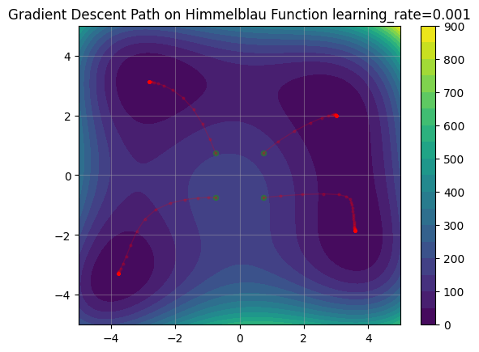
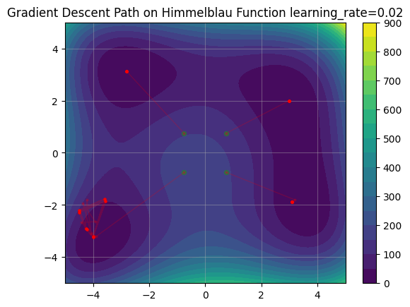
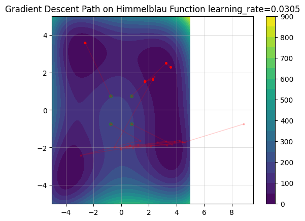

Homework 1 (Solutions)#
Dynamics (Discrete time, linearization)#
1. Derive and implement discrete-time dynamics given continuous-time dynamics.#
Consider the following continuous-time dynamically-extended simple unicycle model. This is a common model for mobile robots with differential drive.
(a)#
Write down the discrete-time dynamics \(\mathbf{x}_{t+1} = f(\mathbf{x}_t, \mathbf{u}_t)\) using Euler integration with step size \(\Delta t\).
Solution
Euler integration is the simplest numerical integration scheme, simply:
Thus our Euler step is:
(b)#
Assuming zero-order hold over each time step of size \(\Delta t\), write down the corresponding discrete-time dynamics \(\mathbf{x}_{k+1} = f_\text{d}(\mathbf{x}_k, \mathbf{u}_k, t_k)\) by performing the integration analytically, where \(f_\text{d}(\mathbf{x}_k, \mathbf{u}_k) = \mathbf{x}_k + \int_{t_k}^{t_k+\Delta t}f_\text{c}(\mathbf{x}(\tau), u(\tau), \tau)d\tau\) where \(\mathbf{x}_k = \mathbf{x}(t_k)\), and \(\mathbf{x}_{k+1} = \mathbf{x}(t_{k+1}) = \mathbf{x}(t_k + \Delta t)\). You may verify your results with your favorite software (e.g., Mathematica or Wolfram Alpha), but should outline the intermediate steps.
Note: In your analytic discrete-time dynamics, you will encounter \(\omega\) in the denominator of some expressions. In your code, you must handle cases when \(\omega\) is equal to or very near zero to avoid numerical errors or division by zero. (Tip: Instead of using an if statement, you can use jax.numpy.where for better support of batched inputs.)
- Hint: The theoretical analytic solution is well-behaved as \(\omega \to 0\), but your code must take care with this limit.
Solution
We compute the analytic discrete-time dynamics by integrating the continuous-time dynamics
assuming zero-order hold (constant control in each time interval). Since the \(x\) and \(y\) components of the state \(\mathbf{x}\) depend on the \(v\) and \(\theta\) components, but not vice versa, it will be easier to compute the \(v\) and \(\theta\) components first:
Now we turn to the \(x\) and \(y\) components. First \(x\):
The last step is obtained by performing integration by parts. You can double check your algebra with Mathematica or Wolfram Alpha. By a similar integration, we find
Thus our final analytic discretization is:
(c)#
Using your analytic expression from (a), analytically differentiate your expression to obtain the state and control jacobians of the discrete-time dynamics.
Solution
From (a), we have
Consider linearizing about \((\mathbf{x}_k, \mathbf{u}_k)\), the state and control Jacobians are:
(d)#
Generate 100 random states and verify that your analytic expression for the state and control jacobian matches the values you get from using jax.jacobian.
Solution
You can use the (pseudo)code below and replace with your functions of jacobian matrix
# generate random states and controls to test the Jacobians
def sample_states_and_controls(dynamics, n_samples, *, key):
state_dim, control_dim = dynamics.state_dim, dynamics.control_dim
k1, k2 = jax.random.split(key, 2)
states = jax.random.uniform(k1, (n_samples, state_dim))
controls = jax.random.uniform(k2, (n_samples, control_dim))
return states, controls
def analytic_jacobian(state, control, dt):
x, y, th, v = state
w, a = control
A = jnp.array([[1, 0, -v * jnp.sin(th) * dt, v * jnp.cos(th) * dt],
[0, 1, v * jnp.cos(th) * dt, v * jnp.sin(th) * dt],
[0, 0, 1, 0],
[0, 0, 0, 1]])
B = jnp.array([[0, 0],
[0, 0],
[dt, 0],
[0, dt]])
return A, B
continuous_dynamics = ... # continuous-time dynamically extended unicycle
dt = 0.1 # pick a value for dt
n_samples = 100
discrete_dynamics_euler = Dynamics(euler_integrate(continuous_dynamics, dt), state_dim, control_dim)
states, controls = sample_states_and_controls(discrete_dynamics_euler, n_samples, key=jax.random.PRNGKey(0))
# set tolerance
tol = 1e-6
# get jacobians using jax.jacobian for all states
A_jax, B_jax = jax.vmap(jax.jacobian(discrete_dynamics_euler, [0, 1]))(states, controls)
# get analytic jacaobians for all states
A_analytic, B_analytic = jax.vmap(analytic_jacobian, in_axes=(0, 0, None))(states, controls, dt)
# check if the two values are all close
jnp.allclose(A_jax, A_analytic, atol=tol)
jnp.allclose(B_jax, B_analytic, atol=tol)
2. Study the classical cart-pole system and understand the limits of linearization.#
(This problem is adapted from Underactuated Robotics notes by Russ Tedrake at MIT.) The cart-pole system is a classic example of a nonlinear system \(\dot{\mathbf{x}} = \mathbf{f}(\mathbf{x}, \mathbf{u})\). Using the same convention as the textbook, we describe the state of the cart-pole as the vector \(\mathbf{x}=[x,\theta, \dot{x}, \dot{\theta}]^T\), the dimension is \(n=4\), and let the force on the cart be the control input \(\mathbf{u}=[f_x]\), where the dimension is \(m=1\). For sake of simplicity, let \(m_\mathrm{c}=m_\mathrm{p}=\ell=1\) and \(g=9.81\).
(a)#
Let \(\bar{\mathbf{x}} = \mathbf{x} - \mathbf{x}^*\), \(\bar{\mathbf{u}}=\mathbf{u} - \mathbf{u}^*\) denote the error in state and control relative to the equilibrium \((\mathbf{x}^*, \mathbf{u}^*)\). Show that the linearized error dynamics is of the form
where
Hint: Since \((\mathbf{x}^*, \mathbf{u}^*)\) is an equilibrium point, \(\mathbf{f}(\mathbf{x}^*, \mathbf{u}^*)=0\) and \(\dot{\mathbf{x}}^*=0\).
Solution
Using state \(\mathbf{x} = [x, \theta, \dot{x}, \dot{\theta}]^T\), and plugging \(m_c=m_p=l=1\) and \(g=9.81\) into the equations for \(\ddot{x}\) and \(\ddot{\theta}\) in the Underactuated Robotics notes (chapter 3, equations 16 and 17), we find the nonlinear state-space dynamics:
We will take a first-order Taylor series about this equilibrium:
Since \((\mathbf{x}^*, \mathbf{u}^*)\) is an equilibrium point, \(f(\mathbf{x}^*, \mathbf{u}^*)\) is zero, and hence:
Defining \(\bar{\mathbf{x}} = \mathbf{x} - \mathbf{x}^*\) and \(\bar{\mathbf{u}} = \mathbf{u} - \mathbf{u}^*\), we have:
Finally, note that \(\bar{\mathbf{x}}\) and \(\mathbf{x}\) differ only by the constant \(\mathbf{x}^*\), and hence \(\dot{\bar{\mathbf{x}}} = \dot{\mathbf{x}}\). Thus:
(b)#
The linearization error is given by \(e(\mathbf{x}, \mathbf{u},\mathbf{x}^*, \mathbf{u}^*) = \| \mathbf{f}(\mathbf{x}, \mathbf{u}) - \mathbf{f}_\mathrm{lin}(\bar{\mathbf{x}}, \bar{\mathbf{u}})\|_2\). Compute the linearization error for the following states and control pairs. Include the numbers in your write-up.
\(\mathbf{x}=[0, 0.99\pi, 0, 0]^T\) and \(\mathbf{u}=[0]\)
\(\mathbf{x}=[0, 0.9\pi, 0, 0]^T\) and \(\mathbf{u}=[-10]\)
\(\mathbf{x}=[0, 0.85\pi, 0, 0]^T\) and \(\mathbf{u}=[0]\)
\(\mathbf{x}=[0, 0.5\pi, 0, 0]^T\) and \(\mathbf{u}=[0]\)
\(\mathbf{x}=[0, 0, 0, 0]^T\) and \(\mathbf{u}=[0]\)
\(\mathbf{x}=[1, \pi, 0, 0]^T\) and \(\mathbf{u}=[10]\)
Solution
Linearization errors are
0.001
2.354
2.289
26.054
68.913
0.000
(c)#
Provide a brief answer to the following questions.
Is our linear approximation valid for all the points we tested?
Do we expect a linear controller to do a decent job when \(\theta=\frac{\pi}{2}\)?
When \(\theta\) is different from \(\pi\), does the linearization error depend on \(\mathbf{u}\)?
Why is the error from the second case bigger than the one from the third, even if the second \(\theta\) is closer to \(\pi\)?
What about the position \(x\) of the cart? Should it affect the linearization error? If no, why not?
Solution
The linear approximation is not valid for all points; as the actual state and control move farther from the equilibrium point used for linearization, the linearization error increases. This means the linearized model provides a less accurate representation of the true system the further we are from the linearization point.
At \(\theta = \frac{\pi}{2}\), we observed the second-largest linearization error among the test cases. Therefore, we should not expect a linear controller based on this approximation to perform well at this point.
The linearization error does indeed depend on \(\mathbf{u}\) when \(\theta\) differs from \(\pi\). Even though the original nonlinear dynamics are linear in \(\mathbf{u}\), the coefficient multiplying \(\mathbf{u}\) depends on \(\theta\). If \(\theta\) is not the same as in the linearization, the influence of \(\mathbf{u}\) on the true dynamics can differ significantly from the linearized model, leading to increased error.
Specifically, when \(\theta \neq \pi\), a large value of \(\mathbf{u}\) can amplify the linearization error, as seen in the second test case, where the larger input \(\mathbf{u}\) led to a larger overall error than the third case, despite \(\theta\) being closer to \(\pi\).
The position \(x\) of the cart does not affect the linearization error. This is because the system dynamics \(f(\mathbf{x}, \mathbf{u})\) are independent of \(x\), and \(x\) does not appear in the linearized dynamics. Therefore, changing \(x\) does not influence the difference between the nonlinear and linearized models.
Optimization#
1. Cross entropy method.#
Study the cross-entropy method (CEM) as presented in the Algorithms for Optimization textbook, focusing especially on page 133. Your objective is to implement the core CEM algorithm for use in global optimization, specifically targeting the Branin function described below.
Your implementation should include a function named cross_entropy_method(...). At a minimum, this function must:
Accept the objective function to optimize,
Accept any required arguments for initializing the CEM algorithm,
Accept algorithm-specific hyperparameters,
Return the best solution found by the algorithm.
Write your code with clear, comprehensive comments that demonstrate a solid understanding of each algorithmic step.
To demonstrate both the correctness and generality of your implementation, apply your cross_entropy_method to at least one additional objective function beyond the Branin function.
For deeper analysis, visualize CEM’s progress and sample distributions over iterations using plots or animations.
Finally, create several GIFs that show how samples evolve and converge over time under differing hyperparameter settings and objective functions. Comment on the effectiveness of CEM for locating local versus global minima, and discuss which factors (such as population size, number of elite samples, initialization, etc.) should be considered when selecting hyperparameters for different optimization scenarios.
Branin function#
The Branin function is a popular benchmark function for optimization algorithms. It is defined as:
where the typical parameter values are:
\( a = 1 \)
\( b = \frac{5.1}{4\pi^2} \)
\( c = \frac{5}{\pi} \)
\( r = 6 \)
\( s = 10 \)
\( t = \frac{1}{8\pi} \)
The function is usually evaluated on the domain \( x \in [-5, 10] \) and \( y \in [0, 15] \).
The Branin function has three global minima, making it useful for testing the performance of global optimization algorithms. Its landscape is characterized by multiple valleys and ridges, which can challenge optimization methods.
Solution
The implementation of the cross-entropy method (CEM) can be found in the Jupyter notebook cem.ipynb.
Discussion of Hyperparameter Effects:
CEM is generally effective at escaping local minima and finding global minima, but its success is highly sensitive to the choice of hyperparameters.
Population Size:
A larger population enhances exploration of the search space and reduces the chance of missing the global minimum, but comes with increased computational cost. Conversely, a smaller population may lead to faster convergence, but with a higher risk of premature convergence to suboptimal (local) minima.
Elite Fraction (Number of Elite Samples):
The ratio of elite samples to the total population is more important than the absolute count. A very small elite fraction may cause the algorithm to converge prematurely to local minima, while a large elite fraction can slow down convergence or even prevent the algorithm from concentrating adequately, resulting in failure to converge.
Initialization:
The choice of initial mean and covariance for the sampling distribution determines which regions of the search space the algorithm explores early on. Poor initialization can result in slow convergence or in the algorithm never discovering the global minimum.
Number of Iterations:
Increasing the number of iterations allows the sampling distribution to progressively narrow around promising regions, improving the likelihood of finding the global minimum. Too few iterations can cut convergence short. After convergence, all elite samples may collapse to a single point, causing the covariance to become zero; at this stage, further sampling can fail or produce errors.
2. Gradient descent.#
Given the different functions studied in notebook 02, discuss how the choice of initial conditions and step size affects the convergence and the final solution when using (vanilla) gradient descent. Provide some plots to support your discussion.
Solution
Figures 1 to 4 illustrate how both the initial starting point and the choice of step size affect the behavior of gradient descent. Different initializations can lead the algorithm to converge to different local minima.
Choosing an appropriate step size is crucial for successful optimization. A suitable step size accelerates convergence (as seen when comparing Figure 1 and Figure 2). If the step size is set too large, gradient descent may diverge (Figure 3) or converge to an unintended solution (Figure 4).
Figure 1: Gradient descent step size = 0.001.

Figure 2: Gradient descent step size = 0.01.
Figure 3: Gradient descent step size = 0.02.

Figure 4: Gradient descent step size = 0.0305.

3. (Optional) Gradient descent algorithms.#
Read Chapters 5 and 6 of the Algorithms for Optimization textbook. In your own words, summarize how the various first-order and second-order variants of gradient descent differ from basic gradient descent, and explain in what ways they may offer improved performance. Consider aspects such as convergence speed, ability to escape local minima, sensitivity to step size, and robustness to the shape of the objective landscape. You don’t need to write an essay here, but rather, demonstrate an understanding that there are more sophistocated gradient descent methods, the intuition behind them, and their strengths and weaknesses.
Solution
First-order Methods
Basic Gradient Descent:
Basic gradient descent moves iteratively in the direction of the negative gradient, with updates scaled by a fixed step size (learning rate). Its behavior is highly sensitive to the choice of this step size: too small, and convergence is painfully slow; too large, and the method can overshoot or even diverge, especially for functions with steep, narrow valleys or ill-conditioned curvature.
Conjugate Gradient:
Unlike basic gradient descent, which always moves along the steepest descent direction, the conjugate gradient method constructs a sequence of conjugate directions. These directions are designed to avoid redundant zig-zagging, greatly improving convergence—particularly for quadratic and nearly-quadratic problems. For an n-dimensional quadratic function, it theoretically converges in at most n steps. Its efficiency, however, is best for functions that are close to quadratic.
Momentum:
Momentum methods accumulate a running average of past gradients—essentially building up “velocity”—which helps accelerate convergence in well-aligned directions and dampen oscillations caused by steep or narrow valleys. While this can speed up optimization dramatically, momentum can also cause overshooting or difficulty slowing when approaching a minimum.
Nesterov Momentum:
Nesterov momentum refines standard momentum by computing the gradient not at the current position, but at a look-ahead position estimated using the velocity. This anticipatory step allows Nesterov momentum to slow down if the landscape changes, reducing overshooting and generally improving stability.
Adagrad:
Both momentum and Nesterov methods use a single learning rate for all parameters. Adagrad, in contrast, adapts the learning rate individually for each parameter by accumulating the sum of squared historical gradients. Over many iterations, this can make learning rates shrink excessively and stall progress.
RMSProp:
To prevent Adagrad’s shrinking learning rates, RMSProp introduces an exponential decay factor to the accumulation of squared gradients, so only recent gradients have significant influence. This maintains a more consistent and effective step size throughout training.
Adadelta:
Adadelta further addresses the “unit mismatch” problem by not only averaging the squared gradients (like RMSProp) but also averaging the squared parameter updates, yielding a step size that better matches the scale of the parameters. This removes the need for a manually chosen learning rate, increasing robustness—though sometimes at the cost of slower convergence.
Adam:
Adam combines the ideas of RMSProp (exponentially decaying squared gradients) and momentum (exponentially decaying gradient averages), resulting in an optimizer that is robust and generally effective in practice. However, choosing a base learning rate remains important for Adam to converge reliably.
Hypergradient Descent:
Hypergradient descent dynamically adjusts the learning rate during training based on the alignment between current and previous gradients. If gradients continue to point in similar directions, the learning rate increases to accelerate convergence. This removes much of the need for manual learning rate tuning.
Summary:
Basic gradient descent is sensitive to the learning rate and converges slowly in challenging landscapes. Conjugate gradient methods can dramatically speed up convergence but are best suited to quadratic-like problems. Momentum-based and Nesterov methods address oscillations and speed up convergence but still require careful learning rate selection. Adaptive methods—Adagrad, RMSProp, Adadelta, Adam, and Hypergradient Descent—dynamically adjust the learning rate to achieve a better tradeoff between speed and robustness, making them more suitable for a wide range of optimization tasks.
Second-order Methods
Newton’s Method:
Newton’s method approximates the minimum by iteratively building a local quadratic (second-order Taylor) expansion of the loss and analytically minimizing that approximation. This requires computing (and inverting) the Hessian—the matrix of second derivatives—for multivariable functions. When the quadratic approximation is good, convergence is extremely fast. However, if the function is not well-approximated locally by a quadratic (or if the Hessian is ill-conditioned), Newton’s method can oscillate, overshoot, or even diverge.
For univariate functions, the second derivative can be estimated numerically if not available analytically (e.g., with finite differences). For multivariate problems where it’s computationally expensive to form the full Hessian, quasi-Newton methods such as Davidon–Fletcher–Powell (DFP) or Broyden–Fletcher–Goldfarb–Shanno (BFGS) approximate the Hessian efficiently using only gradient evaluations.
Control Certificates#
1. Class-K function#
Consider a class-\(\mathcal{K}\) function of the form \(\alpha(z) = a z\). Explain how adjusting the parameter \(a\) impacts both the system’s response and the level of conservatism inherent in a Control Barrier Function (CBF) safety filter. Specifically, discuss the trade-offs associated with choosing higher versus lower values of \(a\) in terms of safety margin, responsiveness, and potential limitations for practical implementation.
Solution
For a Control Barrier Function (CBF) using a class-\(\mathcal{K}\) function \(\alpha(z) = a z\), the parameter \(a\) directly influences both how proactively and how assertively the safety filter intervenes as the state approaches the boundary of the safe set. In the CBF constraint \(\max_{u \in U}\, \nabla b(x)^\top f(x, u) \geq -ab(x)\), a larger value of \(a\) makes the right-hand side more negative in the interior of the safe set, effectively allowing the controller to operate closer to the boundary without intervention and making the filter less conservative in normal operation. However, this also means that as the boundary is approached, the controller must react more aggressively—requiring potentially large and rapid changes in control input to maintain safety, which may stress the actuators or even exceed their capabilities.
Conversely, choosing a smaller \(a\) makes the decrease of \(b(x)\) more tightly restricted: the controller begins corrective action farther from the boundary, producing a smoother and earlier response that provides a larger effective safety margin and reduces actuation demands. The trade-off is increased conservatism, which can hinder performance even when the system is safely away from the boundary.
In practice, the choice of \(a\) entails balancing several factors: a larger \(a\) improves responsiveness and minimizes unnecessary conservatism but risks infeasibility (e.g., the required control may exceed actuator or QP limits) near the boundary; a smaller \(a\) is safer but may unreasonably constrain the nominal controller. The optimal value for \(a\) depends on the specific system, desired safety margin, and actuator limits. Careful tuning is necessary to ensure robust, practical implementation.
2. Class-K function and control actuation limits.#
When implementing a CBF safety filter using a class-\(\mathcal{K}\) function \(\alpha(z) = a z\), how should actuator constraints—such as control saturation or rate limits—influence your selection of the parameter \(a\)? Address how such constraints can limit the allowable range of \(a\), and describe the potential consequences of choosing an inappropriate value in the presence of these practical limitations.
Solution
Actuator constraints play a critical role in determining the appropriate value of \(a\) for the class-\(\mathcal{K}\) function in a CBF-based safety filter. If \(a\) is set too high, the resulting safety constraint may require control actions that exceed the system’s actuator or rate limits, leading to an infeasible or unsafe controller—especially when the system state is close to the boundary of the safe set. Reducing \(a\) lowers the required control effort, enhancing feasibility by ensuring the CBF condition can be satisfied within actuator constraints, but this comes at the cost of increased conservatism and potentially restricting nominal performance even when far from the boundary. Therefore, \(a\) should be carefully selected to strike a balance between timely safety intervention and the practical limitations of the actuators, favoring values that guarantee feasibility while maintaining an adequate safety margin.
3. High-order CBF.#
The concept of relative degree is important when analyzing functions with respect to system dynamics. Here, we provide a more precise definition, specifying it for each control input component.
Consider a (sufficiently) differentiable function \(b : \mathbb{R}^n \rightarrow \mathbb{R}\) and a control-affine dynamical system given by \(\dot{z} = f(z) + g(z)u\), where \(z \in \mathbb{R}^n\) and \(u \in \mathbb{R}^m\). The relative degree \(m_\mathrm{r}\) of \(b\) with respect to the \(j\)-th control input is defined as the smallest integer such that
but
Here, \(\mathcal{L}_{v}h(z) = \nabla h(z)^\top v(z)\), \(\mathcal{L}_v^k b(\cdot)\) denotes the \(k\)-th Lie derivative (with \(\mathcal{L}_v^0 b(\cdot) = b(\cdot)\)), and \(\left[x\right]_j\) refers to the \(j\)-th component of the vector \(x\).
Now, consider the continuous-time, dynamically-extended unicycle model, which is a control-affine system, along with a candidate control barrier function (CBF) \(b(z) = x^2 + y^2 - r^2\), where \(r\) is the radius of an obstacle:
a. Demonstrate that the relative degree of \(b\) with respect to the dynamically-extended unicycle dynamics is \(2\) for both control inputs.#
Solution
To determine the relative degree of \(b\) with respect to each control input, we need to examine how many Lie derivatives are required before the control appears explicitly. First, compute the Lie derivative of \(b\) along \(g(x)\):
Given:
Taking the product:
Thus, \(\mathcal{L}_{g}b(x) = 0\) for both control inputs: the controls do not appear in the first derivative. Next, compute the second derivative, \(\mathcal{L}_{g} \mathcal{L}_{f} b(x)\):
where
Now we differentiate this with respect to the state to prepare for the next Lie derivative:
Then,
Calculating the product with \(g(x)\) (which only selects the third and fourth elements for \(\omega\) and \(a\)):
This expression is nonzero for general \((x, y, v, \theta)\)—except possibly at isolated points (such as \(x=y=0\) and/or \(v=0\)). Therefore, the first Lie derivative along \(g(x)\) vanishes, but the second is generically nonzero. This means the relative degree of \(b\) with respect to each input is \(2\).
(b)#
When the relative degree of a barrier function exceeds \(1\), we must use high order control barrier functions (HOCBFs)—analogous to high order control Lyapunov functions—to ensure safety. For a system with relative degree \(2\) and control-affine dynamics \(\dot{z} = f(z) + g(z) u\), the HOCBF constraint takes the following form:
where \(\mathcal{L}_{f}^{2} h(z) = \mathcal{L}_{f}(\mathcal{L}_{f} h)(z)\), \((\alpha_1 \circ h)(z) = \alpha_1(h(z))\), and \(\alpha_1\), \(\alpha_2\) are class \(\mathcal{K}_\infty\) functions.
Given that the CBF for this system has relative degree \(2\), can we directly implement it in a standard CBF-QP (Quadratic Program) safety filter? Discuss why or why not.
Solution
To address whether a standard CBF-QP safety filter can be used for barrier functions of relative degree 2, let’s start by reviewing the control barrier function (CBF) framework.
For a scalar barrier function \(b(z)\), the safety condition is \(b(z) \geq 0\) with an associated constraint on its time derivative to keep the system within the safe set:
where \(\alpha\) is a class \(\mathcal{K}_\infty\) function (typically, a positive, increasing function with \(\alpha(0)=0\)).
Using the notation of Lie derivatives, this becomes:
When the relative degree of \(b\) with respect to the input \(u\) is 1, \(\mathcal{L}_g b(z) \neq 0\). This means that the control \(u\) appears directly in the inequality and can be chosen appropriately (through, for example, a quadratic program, QP) to enforce the constraint and keep the system safe.
To enhance flexibility and allow for more tunable safety behavior, the class \(\mathcal{K}\) function \(\alpha\) is often incorporated:
or equivalently,
The resulting constraint is linear in \(u\) and can be handled efficiently by a QP-based controller.
However, when the relative degree of \(b\) is higher than 1 (e.g., relative degree 2), we find that \(\mathcal{L}_g b(z) = 0\)—the control \(u\) does not appear in the first derivative of \(b(z)\). As a consequence, \(u\) cannot influence \(\dot{b}(z)\) directly, and a standard CBF-QP controller does not work in this setting.
Instead, one must use a high-order control barrier function (HOCBF) formulation that enforces a safety constraint in terms of higher-order derivatives and their Lie derivatives, as described in the question prompt. We can see that despite the increase in the number of terms, for a given value of \(z\), the HOCBF inequality results in a linear inequality constraint in \(u\). This means we can easily use the HOCBF constraint in the CBF-QP filter—the problem remains a QP since the constraints remain linear.
In summary: The standard CBF-QP framework only applies when \(b(z)\) has relative degree 1. For higher relative degree, such as 2, control does not appear in the first derivative of \(b(z)\), so the conventional method fails and must be replaced with a higher-order (HOCBF) approach.
4. Closer look at CBF-CLF-QP Filter demo.#
In this problem, you will take a closer look at the cbf-clf-filter demo. Make sure you first familiarize yourself with the code because you will need to change some of the parameter values to complete this problem.
(a)#
Set the initial state to be [-7, 0.0, 0.0, 2.0] and the desired control to be [0.0, 0.0]. Run the simulation. You will find that the CBF-CLF-QP filter is unsuccessful in keeping the system away from the obstacle. Explain why this behavior occurs.
Solution
To understand why the CBF-CLF-QP filter fails to steer clear of the obstacle in this scenario, let’s analyze the problem in more detail. See that the cost function minimized by the QP is:
so its gradient is:
which is minimized at \(\omega=0\), \(a=0\) if there are no constraints. However, the actual control output is influenced by additional constraints coming from the CLFs and CBF.
When the initial state is \([-7, 0.0, 0.0, 2.0]\), the system lies along the symmetry axis (the \(x\)-axis, with \(y=0\), \(\theta=0\)). Along this symmetry, the Lie derivatives for both the CLFs and CBFs simplify dramatically:
This means that all the constraints depend only on the acceleration \(a\) and not at all on the turn rate \(\omega\).
Therefore, in the QP, \(\omega\) is unconstrained and will always minimize the cost (i.e., set to zero), while \(a\) is adjusted to satisfy the CBF/CLF constraints. As a result, the system cannot generate any turning motion—it can only accelerate or decelerate along the symmetry axis (\(x\)-axis). When it approaches the obstacle, the only way to remain safe is for the CBF constraint to force \(a\) negative (i.e., braking), causing the system to stop at the obstacle boundary rather than turn around it.
This phenomenon—loss of control authority in \(\omega\)—is caused by the symmetry of both the setup and the barrier/goal functions, and it prevents the controller from finding steering solutions in such a configuration.
In summary, the system proceeds straight toward the obstacle until the barrier constraint forces it to stop. Because the configuration is perfectly symmetric—with the robot heading directly toward the obstacle along the \(x\)-axis—the problem setup offers no preference for turning left or right. This symmetry eliminates any control authority over the turning rate (\(\omega\)), effectively removing the ability to steer. As a result, the safety filter cannot generate a turning maneuver around the obstacle. While the system does not collide into the obstacle, it is unable to trun around the obstacle and reach the goal.
(b)#
Set cbf_alpha=0.5 and dt=0.5. Run the simulation. You will find that the CBF-CLF-QP filter is unsuccessful in keeping the system away from the obstacle. Explain why this behavior occurs.
Solution
The issue arises because the safety constraints in the controller are formulated using continuous-time CLF/CBF conditions, while the simulation advances the system in discrete-time steps. This mismatch means that the safety guarantees provided by the continuous-time constraints do not perfectly translate to the actual state evolution in discrete time. When a larger time step (dt = 0.5) is used, each step covers a greater state increment, so any inaccuracies or nonlinear effects accumulate more quickly, and the system is less responsive to constraint enforcement. The zero-order hold approach applies the filtered control for the entire time interval, but the constraints are only checked at the endpoints, not the intermediate states—so the system may violate safety between steps even if the constraint is satisfied at the discrete points.
Additionally, lowering cbf_alpha to 0.5 makes the safety constraint even more restrictive, shrinking the set of feasible controls and reducing controller flexibility. Together with the larger time step, this can cause the controller either to react too late or to become excessively conservative, leading to poor performance around the obstacle.
To address this issue, we should either ensure a sufficiently small time step size is used, or apply the discrete-time CLF/CBF formulas. However, those results in nonlinear control constraints.